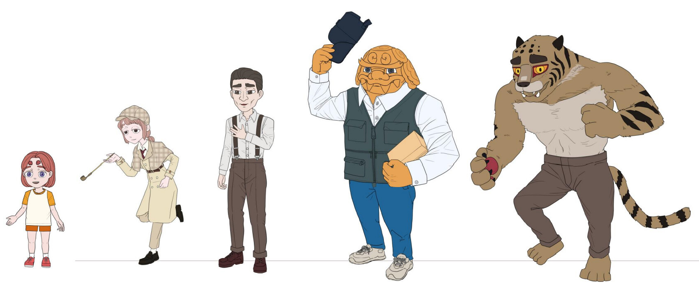

단편 애니메이션 호환(The Ravage of Tiger)은 2022년 건국대학교 영상영화학과 졸업작품으로 기획되었습니다.
해태나 호랑이, 도깨비와 같은 설화 속 존재들이 우리 곁에 살아 숨쉰다면 어떨까요?
톡톡 튀는 상상력에서 시작되는 이야기, '호환'은 신화 속 존재들이 살아 숨쉬는 현대 사회를 가정하여 제작되었으며, 한국 대중에게 친숙한 '스릴러' 장르의 문법을 차용하여 자칫 낯설 수 있는 신화적 생물들을 가까운 이웃으로 끌어오고자 하였습니다.
이 애니메이션은 인간이라면 삶을 살아가면서 피할 수 없는 돌이킬 수 없는 후회와, 이를 대하는 두 아버지의 자세를 다룹니다.
여러분의 삶에서 돌이킬 수 없는 후회란 무엇이었으며, 그리고 이를 대하는 자세는 어떠하였나요?

2021년 9월부터 22년 초까지 프리 프로덕션(Pre-Production)을 진행하였으며, 2022년 상반기부터 본격적인 제작에 들어서 2022년 11월 17일까지 약 15개월에 걸쳐 제작했습니다.
러닝타임은 8분 23초 가량이며, 시나리오, 스토리보드, 컨셉 아트 등 프리 프로덕션을 포함하여 모델링과 애니메이션, 그 외 VFX, SFX, 편집 등 포스트 프로덕션 (Post-Production) 까지 1인 제작으로 진행하였습니다.